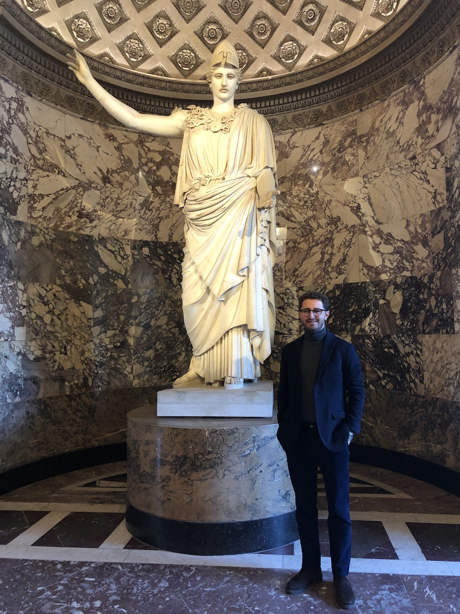

Research Data Specialist at Springer Nature · PhD Candidate, Ruprecht-Karls-Universität Heidelberg
Electrical & Electronics Engineer, research data specialist and neuroscientist with a strong background in machine learning, large-scale data analysis, and the development of robust, reproducible analytical workflows. Experienced in designing and implementing containerized applications and automated data pipelines in collaborative, interdisciplinary settings.
Skilled in extracting actionable insights from complex datasets and communicating results to diverse audiences. Currently completing a Ph.D. in Psychology/Neuroscience (expected end of 2026), with a focus on leveraging advanced computational tools to solve challenging real-world problems.
Research Data Team, Content Innovation. Building synergies between Springer Nature and EMBO Press on AI-based research tools, and experimenting on and developing cutting-edge AI tools that aid the modern research cycle.
Targeted Extinction of Drug Cues During Sleep (TEDDS): on-site fMRI + sleep EEG experiment enhancing precision in recording targeted cue reactivation with combined olfactory and visual cues. Managed the entire project lifecycle from conception to publication — coded experiments with PsychoPy, enrolled participants, collected fMRI data, performed statistical analysis on behavioural and neuroimaging data following ETL principles, and submitted the manuscript.
Multilevel Feature Learning: online experiment investigating model-based/model-free human learning upon objects with varying multi-level features. Managed the project from DevOps to publication — recruited participants via Prolific, coded the experiment with JavaScript/jsPsych, containerized the study with internal ZI-GitLab, collected behavioural data, performed statistical analysis, and submitted the manuscript.
Breathing Apparception Training (BAT): breathing training for persons with anxiety disorder. Joined after data collection; handled data cleaning, statistical analysis and manuscript submission.
ARIADNE is an open science navigator project helping early career researchers find accurate research tools. Created and maintained an online JupyterBook hosted on GitHub with a dynamic Cytoscape.js network visualizing resources and a 10-step research roadmap. Published manuscript in Advances in Methods and Practices in Psychological Science.
Studied own-age bias (cross-age effect) in humans and constructed a deep-net classifier to observe facial age recognition in a naive ANN-based classifier. I released the software part of my thesis in a GitHub repository, and you can find the full thesis here.